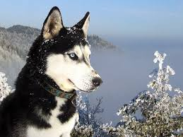

ციმბირული ჰასკი (რუს. Сибирский хаски) — ძაღლის ჯიში, რომელიც გამოყვანილია რუსეთში უძველეს ხანაში. ციმბირულ ჰასკის მომთაბარე ესკიმოსები მარხილში შესაბმელად იყენებდნენ. XIX საუკუნეში ის ვაჭრებმა დაინახეს და 1909 წელს რამდენიმე ძაღლი აშშ-ში ჩაიყვანეს. ელეგანტური ციმბირული ჰასკი სხვა შესაბმელ ძაღლებთან შედარებით პატარაა. შპიცის სხვა სახეობების მსგავსად ის იშვიათად ყეფს (ისევე როგორც მგელი). ჰასკი ძალიან პოპულარულია კანადაში, აშშ-სა და იტალიაში, მისი ბალნის ფერი შეიძლება მრავალფეროვანი იყოს, ის ერთ-ერთია იმ მცირერიცხოვან ძაღლებს შორის, რომლის თვალის ფერი შეიძლება იყოს ცისფერი, ყავისფერი, თხილისფერი ან ვარდისფერი. ციმბირული ჰასკი ღირსეული, კეთილი ძაღლია, შესანიშნავი კომპანიონია. ის ვერ ეგუება ქალაქის პირობებში ცხოვრებას, სჭირდება დიდი ფიზიკური დატვირთვა, კარგად იტანს სიცივეს. აქვს დაკუნთული, სწორი ფეხები, საშუალო ზომის სამკუთხა ყურები, კუდი დამძიმებულია სქელი ბალნით და ბეწვის ცვენის პერიოდში განსაკუთრებული მოვლა სჭირდება.

ლაბრადორ რეტრივერი (იგივე ლაბრადორი) — ერთ-ერთი ყველაზე პოპულარული ძაღლის ჯიშია. ეს ძაღლი განთქმულია, როგორც მონადირე წყლიან და ჭაობიან ადგილებში მობინადრე ნადირზე. ასევე, ფართოდაა გავრცელებული კომპანიონი ძაღლის სახით. იგი ადვილად ექვემდებარება წვრთნას. მთელ მსოფლიოში ითვლება ერთ-ერთ ინტელიგენტურ და დაჯილდოებულ ძაღლად.